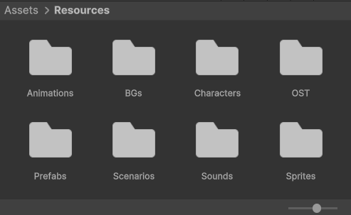

Установка плагина
Первый шаг — добавить VNBuilder в ваш Unity-проект. Сделать это можно одним из двух способов, в зависимости от источника, откуда вы получили плагин.
Если вы приобрели или скачали плагин через Unity Asset Store, то для установки выполните следующие действия:
- В верхнем меню Unity выберите Window → Package Manager.
- В открывшемся окне перейдите на вкладку My Assets (выберите в выпадающем списке в верхней части окна).
- Найдите в списке VNBuilder и нажмите кнопку Import.
- Дождитесь загрузки и подтвердите импорт всех необходимых файлов.
Если вы получили файл плагина в формате .unitypackage с других площадок или напрямую от разработчика, установка ещё проще: достаточно просто перетащить его в окно Project.
После успешного импорта в корне вашего проекта (в папке Assets) вы увидите две основные папки:
- VNBuilder: Содержит все программные компоненты плагина: скрипты, базовые настройки и вспомогательные инструменты, обеспечивающие работу конструктора визуальных новелл.
- Resources: Это главное хранилище всего игрового контента. Внутри вы найдёте заранее организованные подпапки, каждая из которых предназначена для определённого типа ресурсов

Подготовка сцены
Чтобы плагин корректно работал, сцена Unity должна содержать определённые элементы интерфейса и логики. Вы можете воспользоваться готовым шаблоном (Demo Scene) или собрать сцену вручную — оба варианта описаны ниже.
Использование шаблона
Если вы только начинаете работу над визуальной новеллой, проще всего взять за основу демо-сцену, которая поставляется вместе с плагином. Она полностью настроена, содержит все необходимые компоненты и готова к немедленному запуску. Вы можете либо редактировать её напрямую, либо создать копию (через Ctrl+D в окне Project) и работать в ней, оставив оригинал как запасной шаблон.
Рекомендуем начинать именно с неё, чтобы избежать ручной настройки и возможных ошибок.
Ручная настройка
Если вы интегрируете VNBuilder в проект, разрабатываемый ранее, и не можете перенести контент в демо-сцену, выполните следующие шаги для создания необходимого окружения с нуля.
- В иерархии сцены создайте Panel, он будет выступать в роли подложки для текста. Внутрь него поместите TextMeshPro.
- Аналогичным образом создайте отдельный текстовый элемент для вывода имени говорящего.
- Добавьте новый Canvas (например, назовите BackgroundCanvas) и установите его порядок отрисовки (Sort Order) ниже, чем у основного Canvas. Внутри этого элемента создайте 2D спрайт для отображения фона на весь экран.
- Подключите скрипт Reader к основной камере на сцене и заполните все поля в инспекторе.
После выполнения этих шагов сцена полностью готова к работе. Вы можете запустить игру, и воспроизведение сценария будет происходить так же, как и в демонстрационной сцене.
Запуск игры
После всех настроек можно запустить предпросмотр и насладиться результатом. Перед вами полноценная игра, для которой вы не написали ни строчки кода!